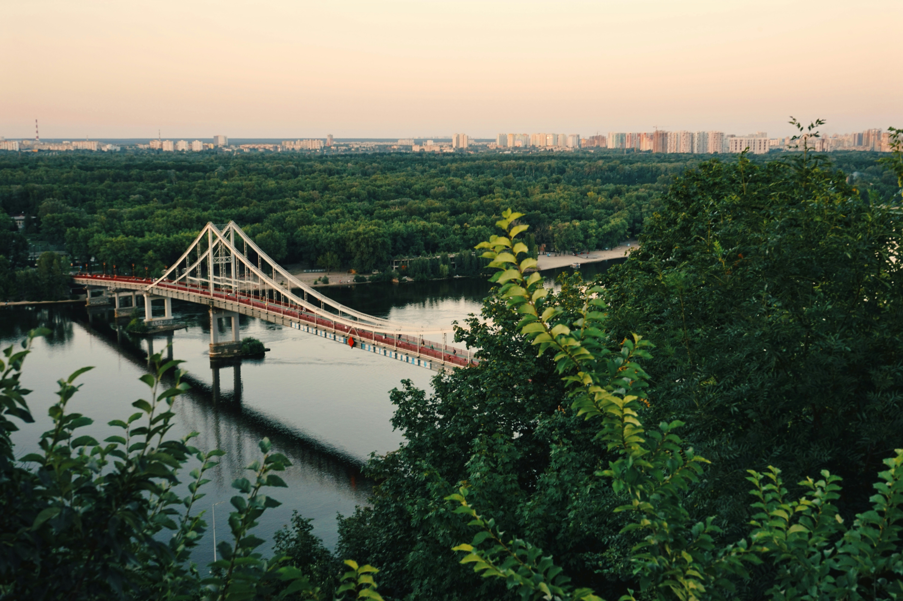

Ukrainian culture and people
The culture of Ukraine is filled with a lot of traditions that people kept for centuries. Kyiv is famous for its food, which brings joy to every local and tourist. Try places such as Mama Manana, Barvy, Shoti, and Puzata Hata. The people in Ukraine are filled with love for their country. If you meet someone who wants to show you around, the time spent together will be the best time of your life filled with memorable stories and shared laughs.
Kyiv, the ongoing war, and the strength of its people
The ongoing war caused a lot of distribution to people living in Kyiv. With no electricity for days, missile attacks, and curfew the life of every Ukrainian has changed. The spirit of the Ukrainian people who fight for their freedom and stay together as the strongest nation ever is what keeps everyone going. When thinking about Kyiv and what makes it so beautiful it's the people who have hearts filled with love for their home country and will never give up. Learn More
Discover Kyiv's Breathtaking Views
A stunning view of Kyiv, showcasing its beauty from above.
Must visit historical attractions in Kyiv
- Andriyivskyy Descent Explore Kyiv
- Khreshchatyk
- Saint Sophia Cathedral
Things to do in Kyiv with your friends and family
- Explore culture by going to local cafes and restaurants
- Walk around Podil for the beautiful view of the Dnipro river
- Take the Funicular Article about Funicular
Gallery